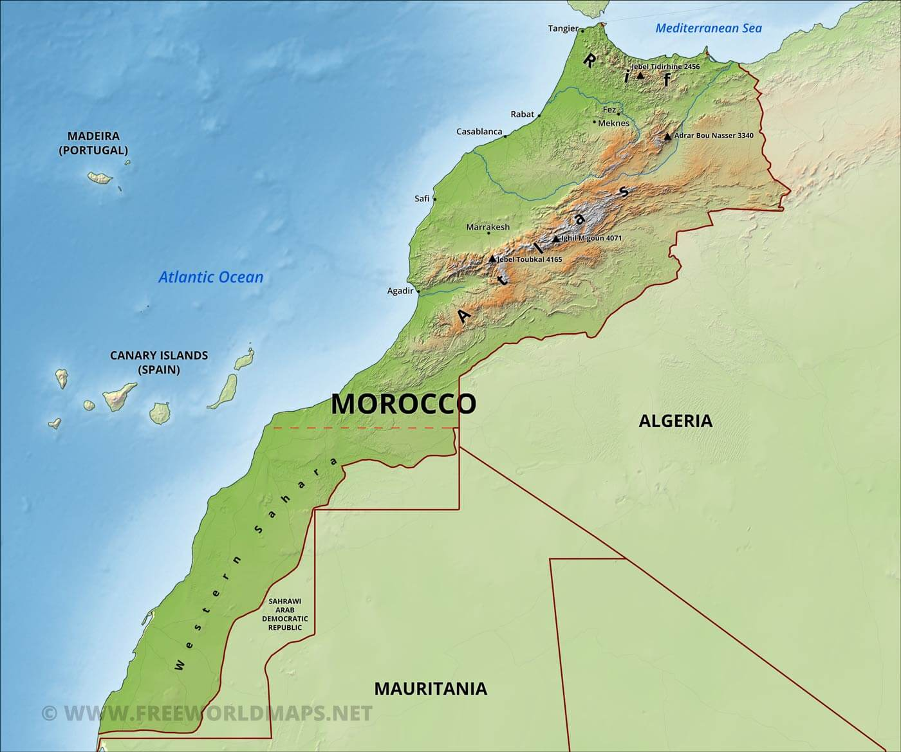
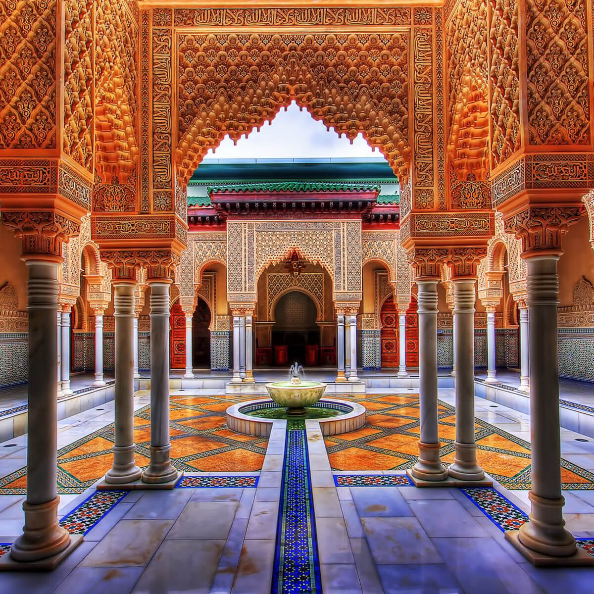
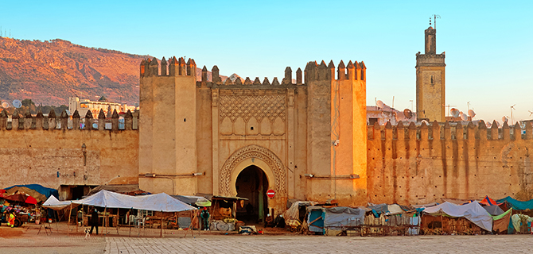
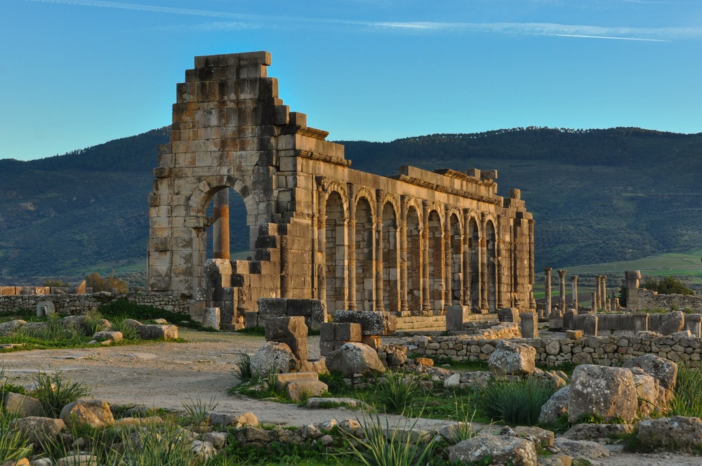

Introduction
The Kingdom of Morocco, situated in North Africa, is a country of rich history, vibrant culture, and breathtaking landscapes. It is bordered by the Atlantic Ocean and the Mediterranean Sea, and shares land borders with Algeria and Western Sahara. Morocco has been inhabited by various civilizations throughout history, including the Phoenicians, Romans, Arabs, and Berbers.
Geography
Morocco is characterized by diverse geography, ranging from coastal plains and fertile valleys to rugged mountains and vast deserts. The Atlas Mountains run through the center of the country, with the High Atlas, Middle Atlas, and Anti-Atlas ranges. The Sahara Desert covers much of southern Morocco, while the northern coastal areas are more temperate.

Culture
Moroccan culture is a fusion of Arab, Berber, and European influences, resulting in a unique and vibrant heritage. The country is known for its colorful markets, intricate architecture, and rich culinary traditions. Traditional Moroccan music, such as Gnawa and Andalusian, is an integral part of the culture, as are festivals like Ramadan and Eid al-Fitr.



History
The history of Morocco spans thousands of years, with evidence of human habitation dating back to prehistoric times. The region has been ruled by various dynasties and empires, including the Phoenicians, Romans, Vandals, and Byzantines. In the medieval period, Morocco was a center of Islamic civilization and saw the rise of powerful dynasties such as the Almoravids, Almohads, and Merinids.

